Focus
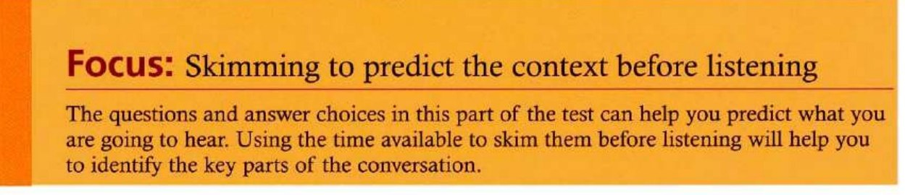
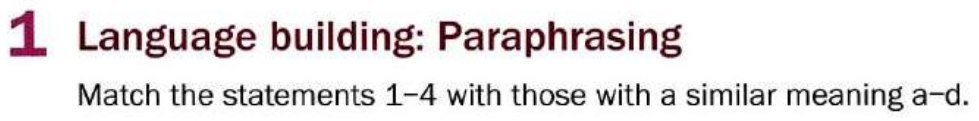
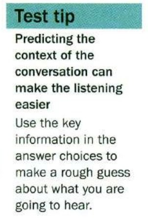
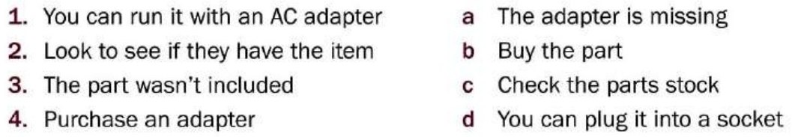
Tap the phrase with the same meaning.
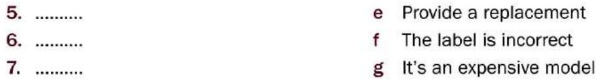
Tapescript
5 It isn’t a cheap brand.
6 The description on the box is wrong.
7 Give me another part.
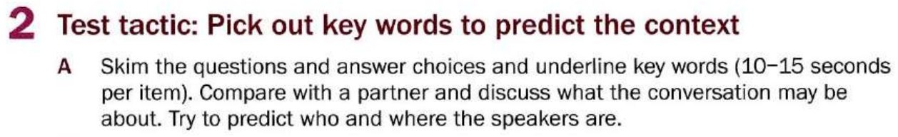
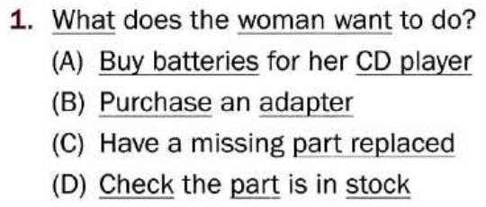
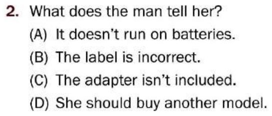
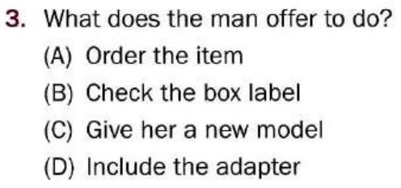
Possible answers
The conversation takes place in a shop.
The woman is the customer — she is unhappy with the product that she has bought.
The sales assistant is finding a way to resolve her complaint / problem.
Tapescript
W Excuse me, I bought this CD player yesterday, but when I got home I noticed that the AC adapter wasn’t in the box, and I don’t want to run it on batteries.
M Oh, really. May I see the player and your receipt, please?
W Yes, certainly. Here you are.
M Ah, as you can see on the label, this model doesn’t come with an adapter. I can order one for you though.
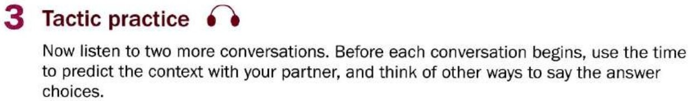
Conversation 1 — questions 1–3
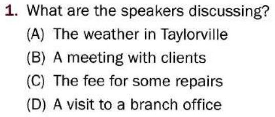
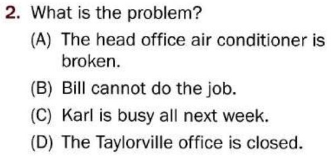
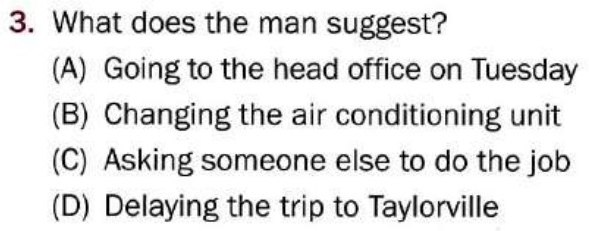
Conversation 2 — questions 4–6
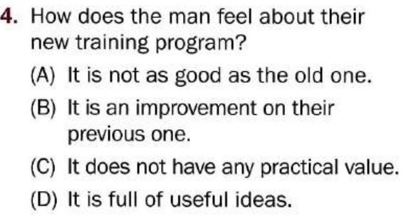
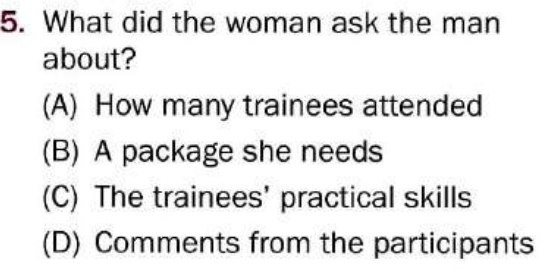
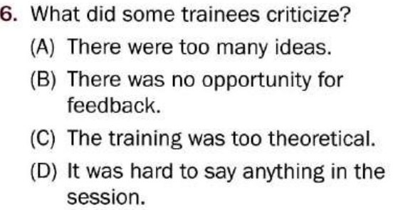
Tapescript
W Bill, do you think you could visit the Taylorville branch on Tuesday?
M Tuesday? I’m afraid that’s impossible. I’m going to be busy all next week.
W That’s a problem. The head office promised them we would send someone down to have a look at their air conditioning early next week.
M Well, why don’t you ask Karl? He should be free next week.
W So, now that you’ve seen it, what do you think of the new training package?
M Well, it’s certainly better than the old one.
W That’s true, but what kind of feedback did you get from the trainees?
M It’s hard to say. They all seemed to enjoy the session, but had mixed feelings about how useful it was. Some of them felt it lacked enough practical value while others said they’d be able to make use of the ideas immediately.
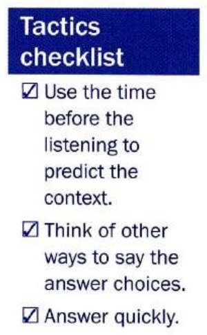
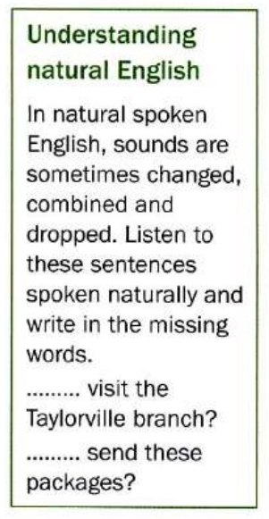
Tapescript
Do you think you could visit the Taylorville branch?
Do you think you could send these packages?
Mini-test
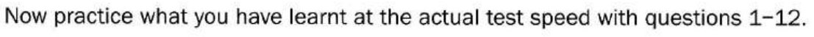
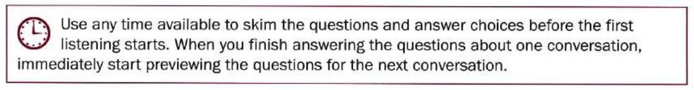
Four conversations, three questions each. The audio runs straight through — read ahead while one conversation is still playing.
Conversation 1 — questions 1–3
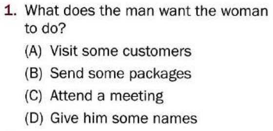
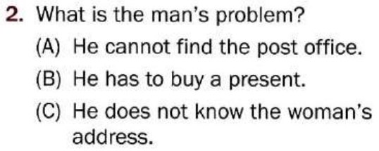
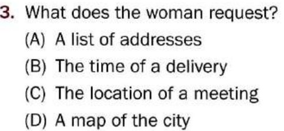
Conversation 2 — questions 4–6
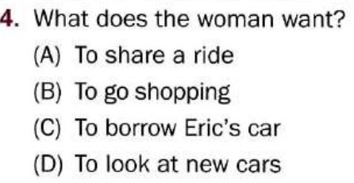
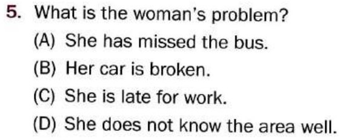
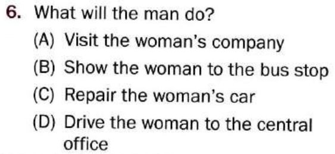
Conversation 3 — questions 7–9
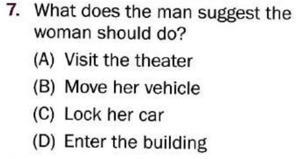
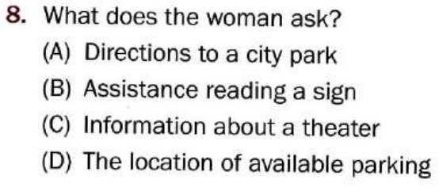
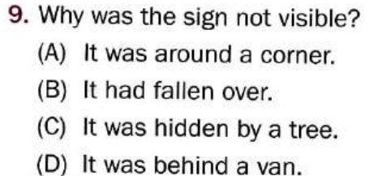
Conversation 4 — questions 10–12
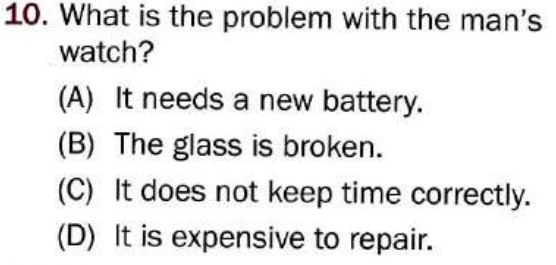
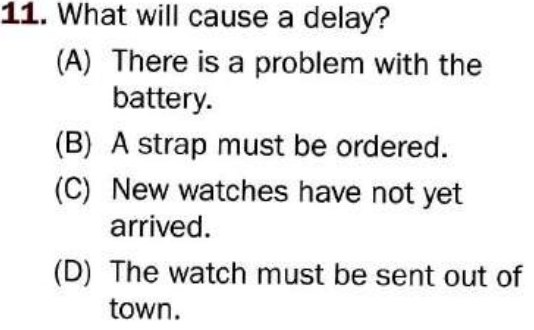
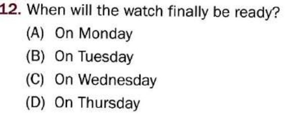
Tapescript — all four conversations
M Do you think you could send these packages for me? They have to get to the courier by 6 o’clock and I’m late for a meeting.
W Sure, I have some time now. Where do you want me to send them?
M The list with the customers’ addresses is in this document and the number of the courier service is at the top of the page. I really appreciate this.
W Don’t worry. I’ll take care of it.
W Eric, are you driving down to the central office tomorrow?
M Yes, I am. Why? Do you need a lift?
W I do. My car is in the shop and I really don’t want to take the bus. Would you mind?
M Not at all, I’d appreciate the company.
M Sorry, I wonder if you would mind moving your van? You’re blocking the emergency exit for the theater.
W I’m sorry, I must have missed the sign. Could you suggest a place to park?
M The sign is here, just behind the tree. If you go around the corner there’s lots of parking by the side of the building.
W Thanks, I’ll move my van right away but you really should cut back those branches.
M Hi. My watch has stopped and I need to replace the battery. Also I need a new watch strap.
W Well, we can replace the battery, but I’m not sure we have this model strap in black. We can order one for you today. Are you in a hurry?
M I’m going out of town on Wednesday morning, so could I pick it up on Tuesday?
W Well, we can change the battery by this afternoon, but if you want us to replace the strap, I’m afraid we wouldn’t have that until Thursday.
Learn by doing: Requests
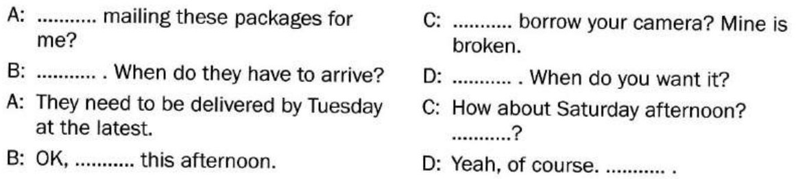
Conversation 1
Conversation 2
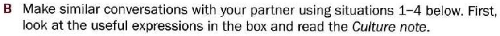
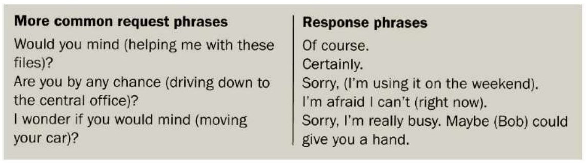
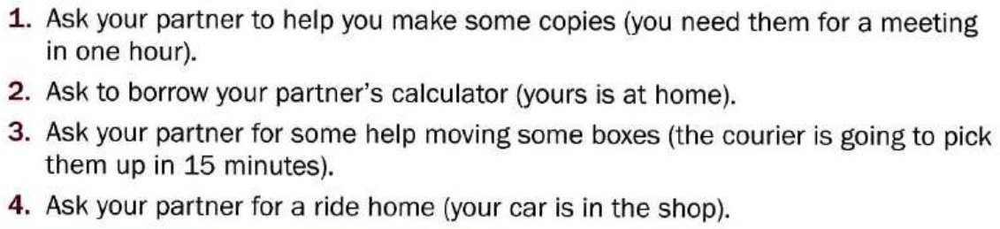
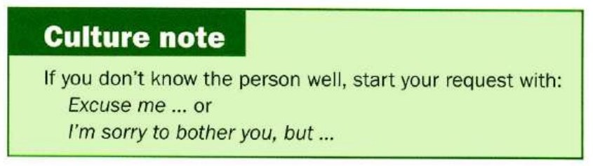
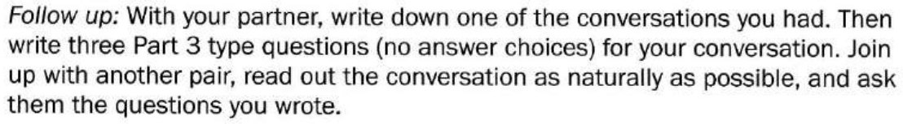
Possible answers for situations 1–4
A Would you mind making some copies for me?
B Certainly. When do you need them by?
A I need them for a meeting which starts in an hour.
B OK. I’ll do them straight away.
A Do you think I could borrow your calculator? I left mine at home.
B Sure, no problem. When do you want to borrow it?
A Would it be alright to use it this afternoon?
B Yeah, of course. I’m not using it right now.
A I need someone to help me move these boxes. Are you free by any chance?
B Sorry, I’m afraid I can’t help now. I’m really busy. Maybe Bob could give you a hand.
A OK, I’ll ask him.
A Do you by any chance drive past Main Drive on your way home?
B Yes, I usually drive back that way.
A I was wondering if I could get a ride with you. My car is at the shop.
B Well, normally that would be fine, but I’m afraid I’m going to the cinema after work today, so I will be going to the other side of town. Sorry.
A Oh, don’t worry. I can take the bus. It’s no problem.
Further study
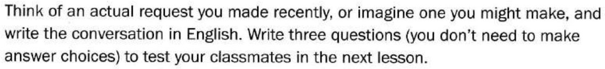
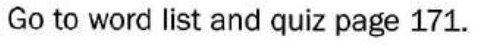
Vocabulary practice
The 31 words behind this unit, drilled four ways — meaning, context, speed, then spelling. Anything you get wrong comes straight back before the round ends, and the game keeps asking about your weakest words. Replay it as often as you like.